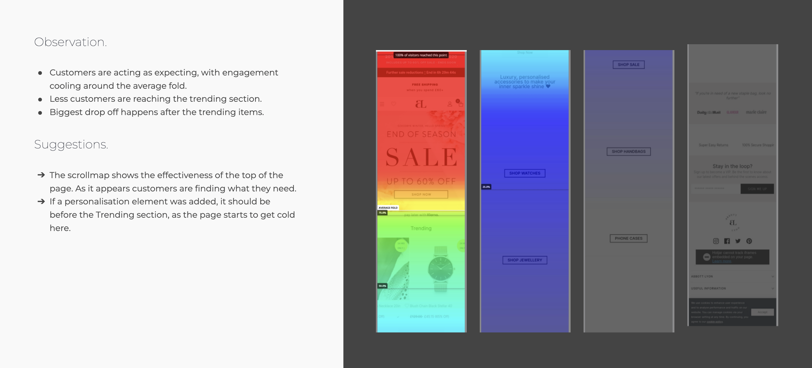
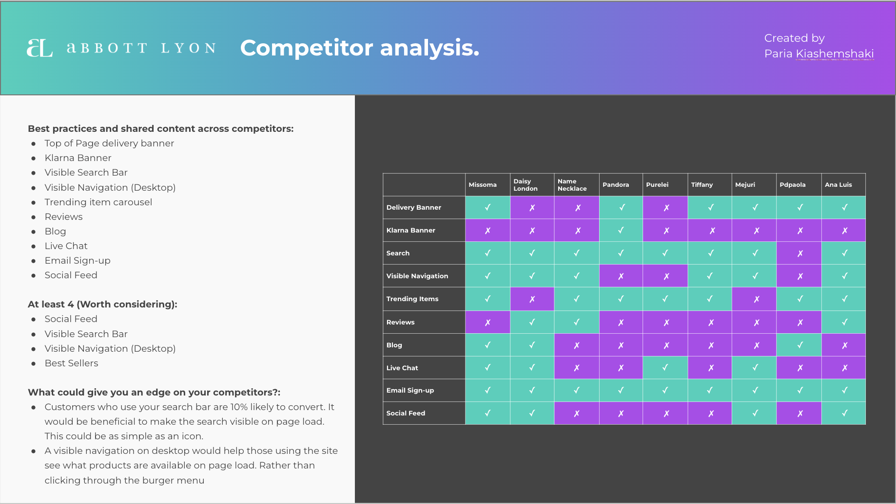
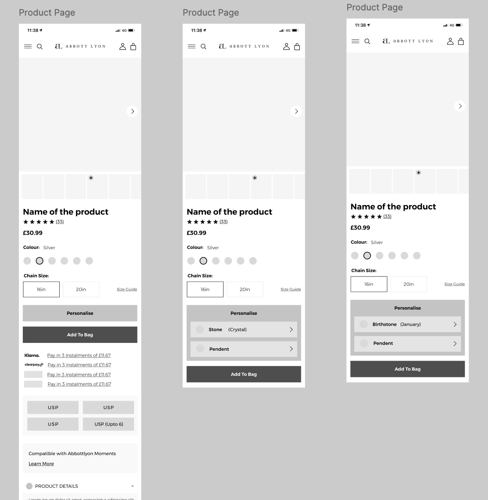
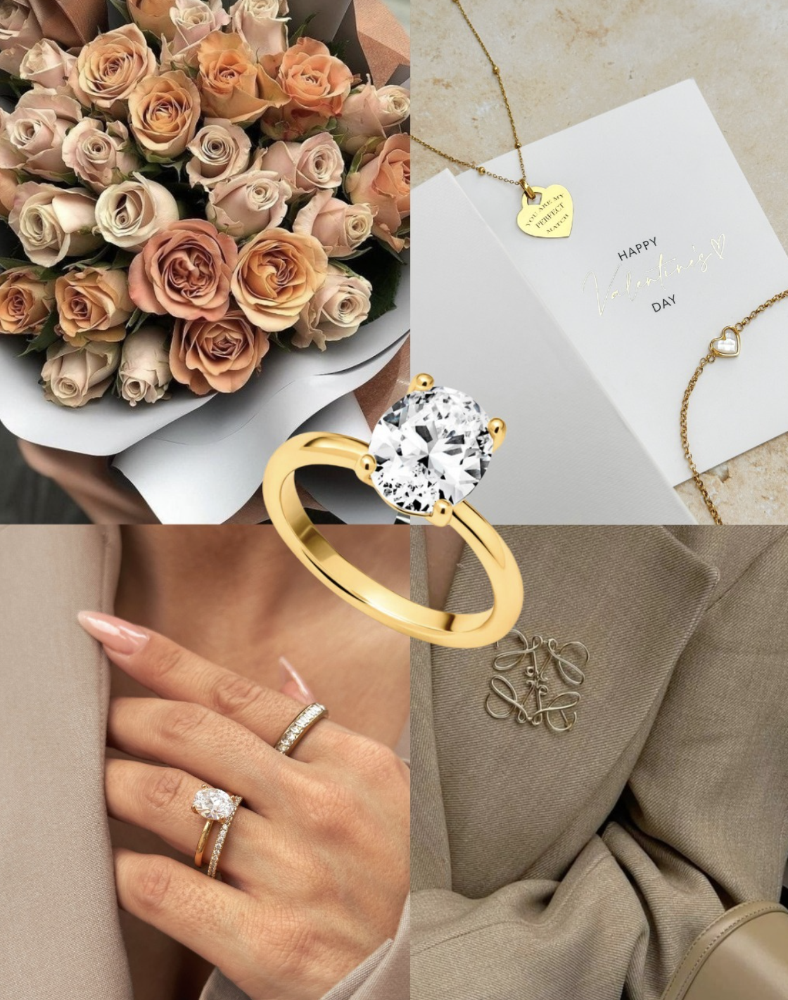
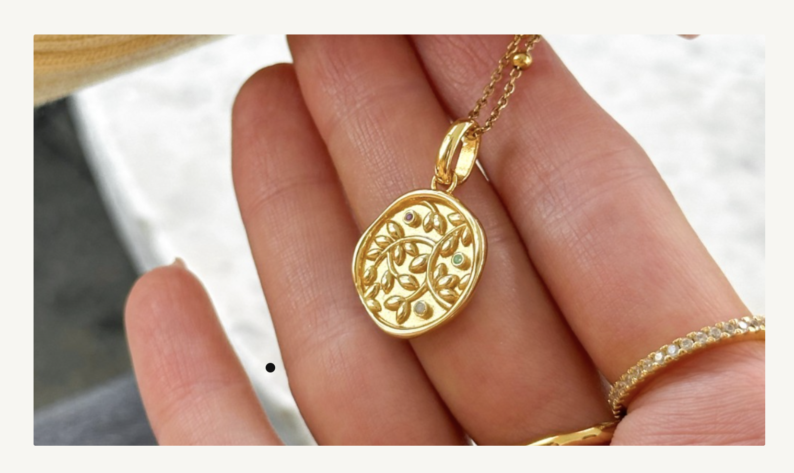

01 — Challenge
A fast-growing brand constrained by its own success.
Abbott Lyon had achieved remarkable growth through product innovation and social media — but their Shopify store was struggling to keep up. The site had been built iteratively, adding features and pages without a coherent UX strategy. The result was a confusing navigation, a personalisation experience that was technically impressive but practically unusable, and a mobile experience that wasn't converting despite high traffic.
The brief: redesign the core shopping experience — particularly the product pages and personalisation flow — to match the ambition and premium positioning of the brand.

02 — Discovery
The personalisation paradox.
The biggest insight from research: Abbott Lyon's personalisation feature — which allowed customers to engrave and customise jewellery — was one of their highest-margin offerings, but only 24% of customers who visited a product page with personalisation available actually used it. The feature existed but wasn't being discovered or understood.
User testing sessions revealed the issue clearly: the personalisation option was buried below the fold, presented in a way that made it feel like an optional add-on rather than a central part of the product. Customers who found it loved it — customers who didn't were leaving without it.
Hidden personalisation
Only 24% of PDP visitors engaged with personalisation — despite it being available on 60% of products and driving 2× average order value.
Size confusion driving returns
35% of returns were size-related — the existing size guides were hard to find and difficult to use on mobile.
Gift journey broken
A significant portion of purchases were gifts, but the gift options and presentation were scattered and unclear.
Mobile image performance
Mobile page load for product pages averaged 6.2 seconds — significantly above the 2.5s threshold where conversion drops sharply.

03 — Design
Making personalisation the hero.
The redesigned product page put personalisation front and centre. Instead of hiding it below a fold, the personalisation interface was integrated directly into the primary product interaction — presented as a natural step in the purchase journey, not an optional extra. A live preview showed the final engraved product updating in real-time as customers typed.
The gift experience was redesigned as a dedicated journey — discoverable from the homepage and navigable entirely on its own terms, with gift wrapping, message cards, and delivery options presented cohesively. Size guides were rebuilt as inline tools using real imagery and model measurements rather than abstract tables.
Mobile performance was addressed through image format optimisation, lazy loading, and a lightweight product image gallery built specifically for mobile swipe behaviour.

04 — Results
Personalisation as a growth engine.
Personalisation engagement jumped 61% in the first month post-launch — and with it, average order value increased by 23%. The gift journey redesign drove a 44% increase in gift-related purchases in the following holiday period.
Returns fell 35% as the new size tools gave customers the confidence to choose correctly first time. Combined, these changes delivered a 40% increase in revenue per visit — the clearest possible signal that the UX investment had paid off.


"We knew personalisation was important but we couldn't unlock it — Paria found the problem and fixed it in a way that felt completely natural. The results speak for themselves."— Head of Digital, Abbott Lyon